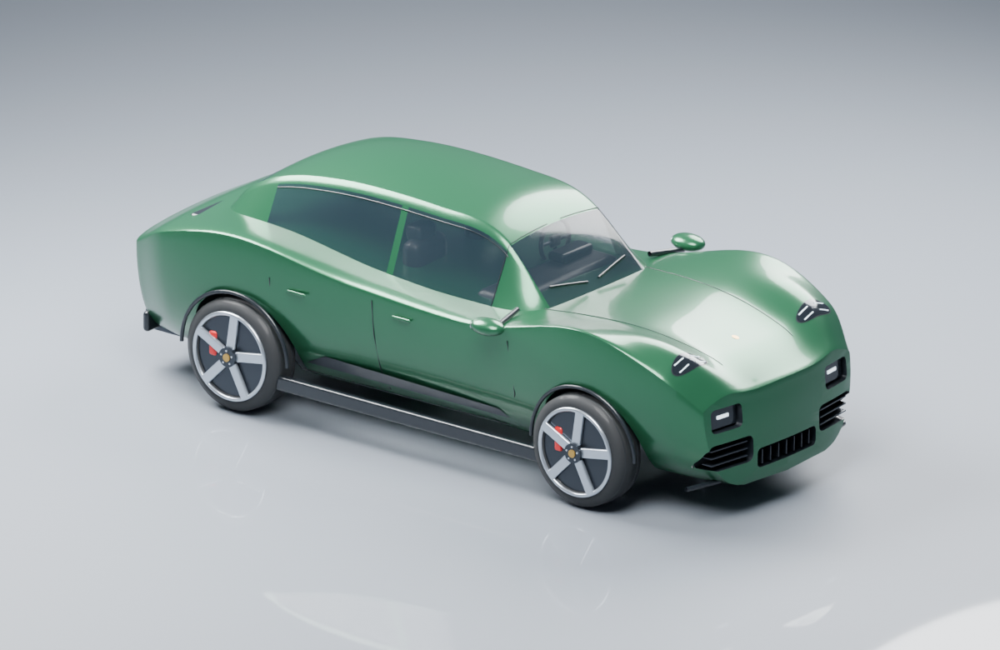
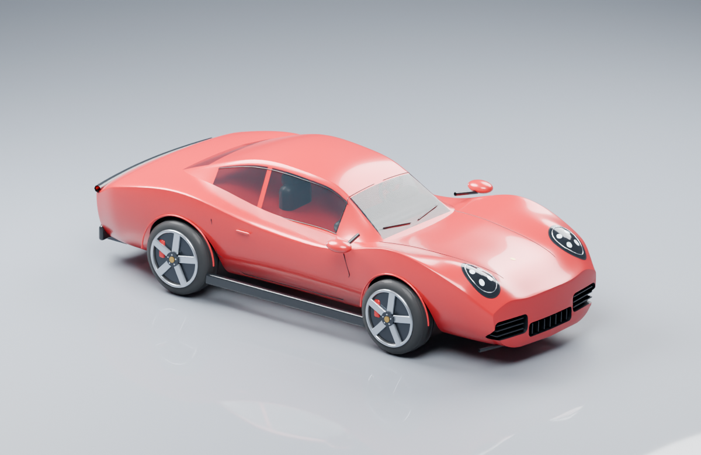
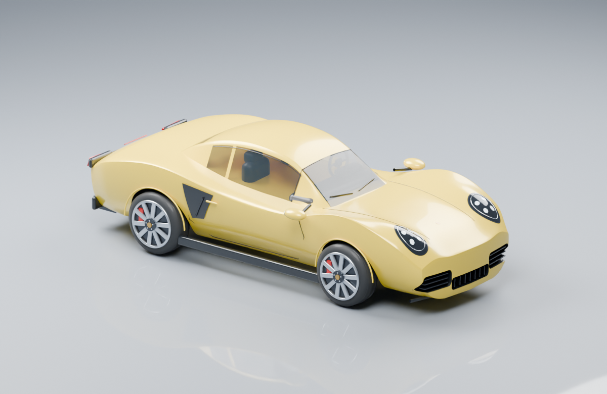
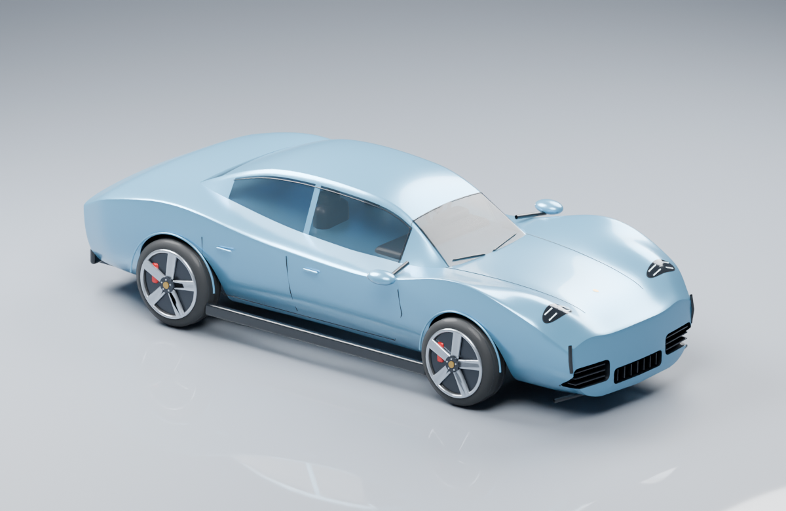
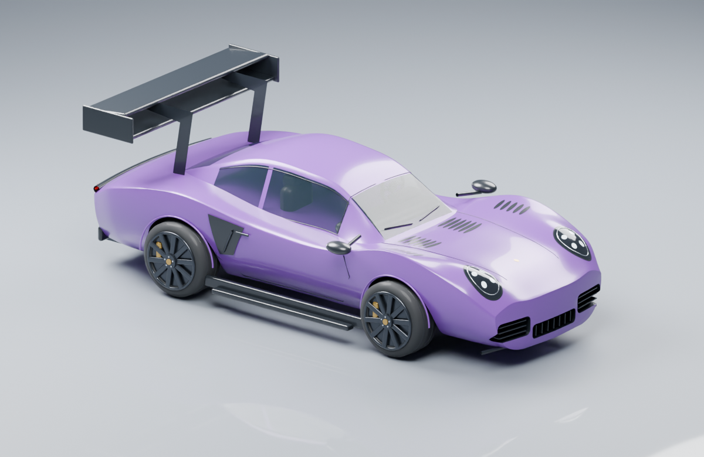

Macan 4S Electric
Oak Green Metallic · 51,672 triangles · 1.47 MB
Tall coupe-like SUV roofline / Split four-point DRL and lower headlights / Door sideblades / Full width rear light strip
포르쉐 공식 참고 페이지 ↗공식 사진의 측면·전면·후면 구도를 참고해 만든 스타일화 에셋입니다. 색상은 게임용 해석이며 공장 CAD 모델은 아닙니다. 차량마다 차체 메시 1개와 독립적으로 회전하는 바퀴 4개로 구성됩니다. GLB는 외부 텍스처 없이 작동하며 Blender 원본과 재생성 스크립트도 프로젝트에 저장되어 있습니다.
모든 차량은 동일한 아케이드 물리를 사용합니다. 선택한 외형은 로컬 플레이어에 적용됩니다.

Oak Green Metallic · 51,672 triangles · 1.47 MB
Tall coupe-like SUV roofline / Split four-point DRL and lower headlights / Door sideblades / Full width rear light strip
포르쉐 공식 참고 페이지 ↗
Guards Red · 59,796 triangles · 1.72 MB
Continuous descending rear flyline / Round oval four-point LED headlights / Pronounced rear shoulders / Rear engine deck and light bar
포르쉐 공식 참고 페이지 ↗
Racing Yellow · 61,548 triangles · 1.75 MB
Compact mid-engine coupe cabin / Large swept side air intakes / Separate rear lamps with a black connector / Central twin exhausts
포르쉐 공식 참고 페이지 ↗
Frozen Blue Metallic · 54,708 triangles · 1.54 MB
Long low four-door sport saloon / Slim four-point lights and vertical air curtains / Sloping rear cabin and shoulders / Rear light strip and exhaust-free diffuser
포르쉐 공식 참고 페이지 ↗
Ultraviolet / Satin Black · 69,140 triangles · 1.97 MB
Wide 911 body / Swan neck supports and two-plane rear wing / Hood radiator vents and fender louvres / Black skirts, canards and ten-spoke wheels
포르쉐 공식 참고 페이지 ↗